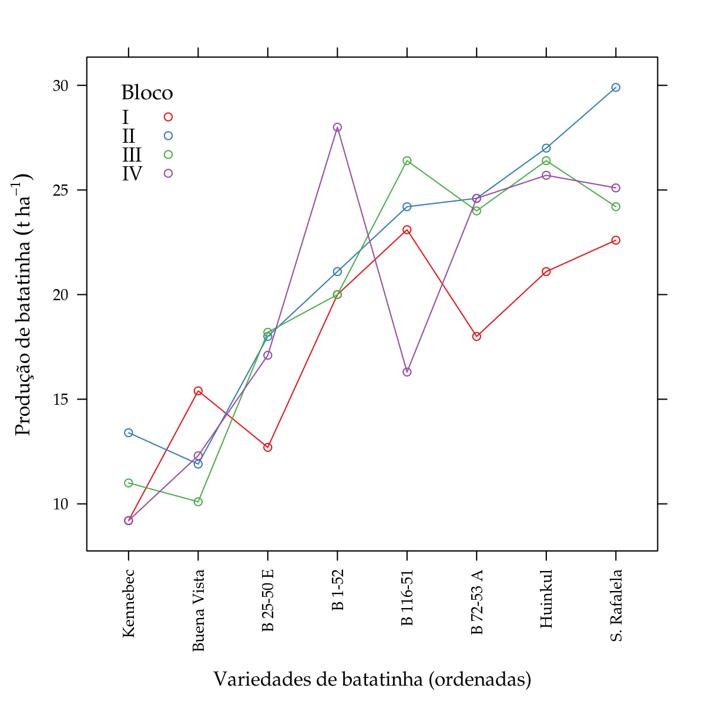

Análise de Experimentos em Delineamento de Blocos Casualizados
PET Estatística UFPR
Análise exploratória
Para exemplificação da análise de um experimento em delineamento de blocos casualizados (DBC), vamos considerar o conjunto de dados PimentelEg5.2.
library(labestData)
## ls("package:labestData")help(PimentelEg5.2, help_type = "html")Nesse experimento estudou-se a produção (resposta) de variedades de batatinha (fator de interesse). O experimento foi instalado em blocos, muito provavelmente para controlar variáveis do ambiente, como a fertilidade do solo, por exemplo. Além disso, uma vez feita a imposição dos blocos, todas as demais variáveis de entrada (mão de obra, dia de colheita, máquinas, etc) devem ser as mesmas para todas as parcelas de um bloco. Isso significa, por exemplo, que todas as parcelas de um bloco devem ser colhidas no mesmo dia e devem ser zeladas (capina, irrigação) pela mesma pessoa. Lembre-se que a blocagem visa a uniformidade, ou seja, condições de contorno iguais para todas as suas parcelas, e por isso as variáveis de entrada precisam ser controladas também.
No conjunto de dados PimentelEg5.2, temos a variável bloco e variedade, ambas como fator. Esse é um detalhe importante: quando as fontes de variação forem de níveis categóricos, elas devem ser variáveis de classe factor no R. É preciso cuidado pois alguns livros usam números inteiros para representar os níveis de fatores categóricos, de tal forma que, se não as declararmos como fatores, o R as entenderá como variáveis numéricas.
#-----------------------------------------------------------------------
# Ler a partir do repositório do labestData.
# url <- paste0("https://gitlab.c3sl.ufpr.br/pet-estatistica",
# "/labestData/raw/devel/data-raw/PimentelEg5.2.txt")
#
# PimentelEg5.2 <-
# read.table(file = url, sep = "\t", header = TRUE)
#-----------------------------------------------------------------------
# Análise exploratória.
# Estrutura do objeto.
str(PimentelEg5.2)## 'data.frame': 32 obs. of 3 variables:
## $ bloco : Factor w/ 4 levels "I","II","III",..: 1 1 1 1 1 1 1 1 2 2 ...
## $ variedade: Factor w/ 8 levels "B 116-51","B 1-52",..: 1 2 3 4 5 6 7 8 1 2 ...
## $ producao : num 23.1 20 12.7 18 15.4 21.1 9.2 22.6 24.2 21.1 ...# Tabela de frequência para os tratamentos.
xtabs(~variedade + bloco, data = PimentelEg5.2)## bloco
## variedade I II III IV
## B 116-51 1 1 1 1
## B 1-52 1 1 1 1
## B 25-50 E 1 1 1 1
## B 72-53 A 1 1 1 1
## Buena Vista 1 1 1 1
## Huinkul 1 1 1 1
## Kennebec 1 1 1 1
## S. Rafalela 1 1 1 1# Dados desempilhados.
t(unstack(x = PimentelEg5.2, form = producao ~ variedade))## [,1] [,2] [,3] [,4]
## B.116.51 23.1 24.2 26.4 16.3
## B.1.52 20.0 21.1 20.0 28.0
## B.25.50.E 12.7 18.0 18.2 17.1
## B.72.53.A 18.0 24.6 24.0 24.6
## Buena.Vista 15.4 11.9 10.1 12.3
## Huinkul 21.1 27.0 26.4 25.7
## Kennebec 9.2 13.4 11.0 9.2
## S..Rafalela 22.6 29.9 24.2 25.1library(lattice)
# Para uma melhor exibição dos dados, vamos reordenar os níveis
# de cultivar pela média de cada uma delas. Depois vamos ordenar os
# registros no data.frame por bloco/variedade.
# Reordena os níveis.
PimentelEg5.2 <- transform(PimentelEg5.2,
variedade = reorder(variedade, producao))
# Reordena os registros.
PimentelEg5.2 <- PimentelEg5.2[
with(PimentelEg5.2, order(bloco, variedade)), ]
# Diagrama de dispersão.
xyplot(producao ~ variedade, data = PimentelEg5.2,
groups = bloco, type = "o",
auto.key = list(corner = c(0.05, 0.95), columns = 1,
title = "Bloco", cex.title = 1.1),
xlab = "Variedades de batatinha (ordenadas)",
ylab = expression("Produção de batatinha"~(t~ha^{-1})),
scales = list(x = list(rot = 90)))
Como pode ser visto na análise preliminar, o número de níveis de variedade é 8 e o número de blocos é 4.
No gráfico de dispersão, ordenamos as variedades pela média amostral e as observações de um mesmo bloco foram ligadas. Note que a relação sinal-ruído fornece uma evidência visual do efeito de variedade.
As observações de um mesmo blocos não foram ligadas por acaso. Nesse gráfico é possível ter impressões sob uma suposição do modelo estatístico: a aditividade dos efeitos de tratamento e bloco.
Especificação e ajuste do modelo
O modelo estatístico correspondente ao delineamento de blocos casualizados é
\[ \begin{aligned} Y|\text{bloco, variedade} &\,\sim \text{Normal}(\mu_{ij}, \sigma^2) \newline \mu_{ij} &= \mu + \alpha_{i} + \tau_{j}, \end{aligned} \]
em que \(Y\) é a variável resposta, \(\alpha_{i}\) é o efeito do bloco \(i\), \(\tau_j\) é o efeito da variedade \(j\), \(\mu\) é a média de \(Y\) na ausência do efeito dos blocos e da variedade e \(\sigma^2\) é a variância das observações ao redor das suas respectivas médias. Note que a média (\(\mu\)) tem dois índices, um referente ao bloco e outro à variedade.
#-----------------------------------------------------------------------
# Ajuste do modelo.
m0 <- lm(producao ~ bloco + variedade, data = PimentelEg5.2)
# Estimativas dos efeitos. Restrição de zerar primeiro nível.
cbind(coef(m0))## [,1]
## (Intercept) 8.750
## blocoII 3.500
## blocoIII 2.275
## blocoIV 2.025
## variedadeBuena Vista 1.725
## variedadeB 25-50 E 5.800
## variedadeB 1-52 11.575
## variedadeB 116-51 11.800
## variedadeB 72-53 A 12.100
## variedadeHuinkul 14.350
## variedadeS. Rafalela 14.750# Aqui tem-se o grupo de coeficientes para cada um dos termos do
# preditor para a média (\mu = 0, \alpha_i = 1, \tau_j = 2).
split(coef(m0), m0$assign)## $`0`
## (Intercept)
## 8.75
##
## $`1`
## blocoII blocoIII blocoIV
## 3.500 2.275 2.025
##
## $`2`
## variedadeBuena Vista variedadeB 25-50 E variedadeB 1-52
## 1.725 5.800 11.575
## variedadeB 116-51 variedadeB 72-53 A variedadeHuinkul
## 11.800 12.100 14.350
## variedadeS. Rafalela
## 14.750# Matrizes de contrastes utilizadas, sob a retrição zerar primeiro nível.
contrasts(PimentelEg5.2$bloco)## II III IV
## I 0 0 0
## II 1 0 0
## III 0 1 0
## IV 0 0 1contrasts(PimentelEg5.2$variedade)## Buena Vista B 25-50 E B 1-52 B 116-51 B 72-53 A Huinkul
## Kennebec 0 0 0 0 0 0
## Buena Vista 1 0 0 0 0 0
## B 25-50 E 0 1 0 0 0 0
## B 1-52 0 0 1 0 0 0
## B 116-51 0 0 0 1 0 0
## B 72-53 A 0 0 0 0 1 0
## Huinkul 0 0 0 0 0 1
## S. Rafalela 0 0 0 0 0 0
## S. Rafalela
## Kennebec 0
## Buena Vista 0
## B 25-50 E 0
## B 1-52 0
## B 116-51 0
## B 72-53 A 0
## Huinkul 0
## S. Rafalela 1# Médias amostrais.
aggregate(producao ~ variedade, data = PimentelEg5.2, FUN = mean)## variedade producao
## 1 Kennebec 10.700
## 2 Buena Vista 12.425
## 3 B 25-50 E 16.500
## 4 B 1-52 22.275
## 5 B 116-51 22.500
## 6 B 72-53 A 22.800
## 7 Huinkul 25.050
## 8 S. Rafalela 25.450No modelo estatístico para DBC, tem-se dois termos com efeito na média: os blocos e as variedades, que são os parâmetros com subíndice. Como os fatores são categóricos, \(k-1\) parâmetros são estimados para acomodar o efeito de cada um (\(k\) é o número de níveis). O R por padrão usa a restrição de zerar o efeito do primeiro nível de cada fator e cada coeficiente corresponde, então, à diferença entre o nível de referência e outro nível qualquer.
O prefixo no nome dos coeficientes vem dos correspondentes termos do modelo. O elemento assign mostra que foi atribuido o mesmo número inteiro para os coeficientes do mesmo termo.
É possível usar outra restrição ou tipo de contraste. Abaixo foi usado o contraste que zera o efeito do último nível, padrão de outro software.
m1 <- update(m0, contrasts = list(bloco = "contr.SAS"))
split(data.frame(coef(m0), coef(m1), row.names = NULL), m0$assign)## $`0`
## coef.m0. coef.m1.
## 1 8.75 10.775
##
## $`1`
## coef.m0. coef.m1.
## 2 3.500 -2.025
## 3 2.275 1.475
## 4 2.025 0.250
##
## $`2`
## coef.m0. coef.m1.
## 5 1.725 1.725
## 6 5.800 5.800
## 7 11.575 11.575
## 8 11.800 11.800
## 9 12.100 12.100
## 10 14.350 14.350
## 11 14.750 14.750# Médias ajustadas de mínimos quadrados (least squares means).
# L <- doBy::LSmatrix(m1, effect = "variedade")
L <- matrix(c(1, 0.25, 0.25, 0.25, 0, 0, 0, 0, 0, 0, 0,
1, 0.25, 0.25, 0.25, 1, 0, 0, 0, 0, 0, 0,
1, 0.25, 0.25, 0.25, 0, 1, 0, 0, 0, 0, 0,
1, 0.25, 0.25, 0.25, 0, 0, 1, 0, 0, 0, 0,
1, 0.25, 0.25, 0.25, 0, 0, 0, 1, 0, 0, 0,
1, 0.25, 0.25, 0.25, 0, 0, 0, 0, 1, 0, 0,
1, 0.25, 0.25, 0.25, 0, 0, 0, 0, 0, 1, 0,
1, 0.25, 0.25, 0.25, 0, 0, 0, 0, 0, 0, 1),
byrow = TRUE,
nrow = nlevels(PimentelEg5.2$variedade),
dimnames = list(levels(PimentelEg5.2$variedade), NULL))
L %*% coef(m1)## [,1]
## Kennebec 10.700
## Buena Vista 12.425
## B 25-50 E 16.500
## B 1-52 22.275
## B 116-51 22.500
## B 72-53 A 22.800
## Huinkul 25.050
## S. Rafalela 25.450O interesse nesse experimento é estudar o efeito das variedades. No entanto, no modelo tem-se também o efeito dos blocos, que foram incluídos para efeito de controle local. Uma maneira de representar o efeito das variedades é calcular as médias ajustadas, ao invés de considerar os coeficientes estimados. Ajustar, no caso, é considerar que para cada termo fora de interesse, os efeitos terão como peso o inverso do número de níveis. Sendo assim, com 4 blocos os pesos são 1/4, ou seja, cada bloco contribui com 1/4 do seu efeito. Perceba que isso é exatamente uma média de efeitos. Apesar da simplicidade, esse tipo de média ficou conhecida por lsmeans (Least Squares Means).
Avaliação dos pressupostos
Além das suposições de normalidade e homogeneidade de variâncias, no modelo para DBC tem-se que o efeito dos blocos e das variedades é aditivo. Ou seja, espera-se que ao mudar de bloco as médias das diferentes variedades sejam deslocadas em igual quantidade. Mas há situações em que isso pode não acontecer. Por exemplo, imagine um experimento de competição de cultivares em que existem blocos pouco férteis e muito férteis. Pode acontecer que no bloco fértil exista praticamente nunhuma diferença entre as cultivares, já que o ambiente é favorável. No bloco pouco fértil, por outro lado, as cultivares melhor adaptadas à baixa fertilidade podem apresentar produção superior. Em outras palavras, nesse cenário o bloco interage com as cultivares, pois as diferenças entre elas é influenciada pelos blocos. O modelo estatístico assume aditividade e, por isso, cabe na hora do planejamento perceber se a característica blocada (fertilidade) pode influenciar no efeito sendo estudado (cultivares). Em caso afirmativo, poder-se-ia procurar uma área experimental uniforme em fertilidade (de preferência, nesse caso, de baixa fertilidade) para permitir distinguir as cultivares.
#-----------------------------------------------------------------------
# Exibe o quarteto fantástico da avaliação dos pressupostos.
par(mfrow = c(2, 2))
plot(m0); layout(1)
Os gráficos de resíduos não apresentam evidências para o fuga dos pressupostos. O gráfico 2-1 (Scale-Location) mostra que a dispersão dos valores é a mesma independente da média. O gráfico 1-2 (Normal Q-Q) mostra que os pontos não fogem acentuadamente uma reta, indicando que a suposição de normalidade dos erros foi atendida.
O teste de Tukey para não aditividade foi proposto por Tukey em 1949 com a finalidade de verificar se dois termos tem efeitos aditivos. Não é o objetivo dessa vinheta entrar em detalhes sobre os fundamentos do teste.
No R há ao menos 3 pacotes com funções para fazer o teste de aditividade de Tukey: agricolae::nonadditivity(), asbio::tukey.add.test() e addititivityTests::tukey.test(). No entanto, esse teste pode ser feito sem chamar pacotes, conforme ilustramos abaixo.
#-----------------------------------------------------------------------
# Teste da aditividade bloco x tratamento.
X <- model.matrix(m0)
beta <- coef(m0)
a <- m0$assign
aditiv <- X[, a == 1] %*% beta[a == 1] * X[, a == 2] %*% beta[a == 2]
anova(update(m0, . ~ . + aditiv))## Analysis of Variance Table
##
## Response: producao
## Df Sum Sq Mean Sq F value Pr(>F)
## bloco 3 50.53 16.843 2.0223 0.1432
## variedade 7 919.72 131.389 15.7755 7.007e-07 ***
## aditiv 1 12.89 12.892 1.5479 0.2278
## Residuals 20 166.57 8.329
## ---
## Signif. codes: 0 '***' 0.001 '**' 0.01 '*' 0.05 '.' 0.1 ' ' 1# Pacote agricolae possuí função para o teste da aditividade.
# agricolae::nonadditivity(y = PimentelEg5.2$prod,
# factor1 = PimentelEg5.2$bloco,
# factor2 = PimentelEg5.2$variedade,
# df = df.residual(m0),
# MSerror = deviance(m0)/df.residual(m0))Pelo resultado do teste não rejeitamos a hipótese de que os efeitos de blocos e variedades são aditivos. Para detalhes sobre o teste da aditividade visite http://www.ime.usp.br/~botter/mae327/Blocos/Blocos.pdf, página 20.
Inferências
O efeito das variedades é representado pelos coeficientes \(\tau_j\) no modelo estatístico do experimento. Se não existe efeito das variedades, os valores estimados \(\tau_{i}\) serão próximos a zero. A hipóteses nula de não haver efeito é representada por
\[ \text{H}_{0}: \tau_j = 0, \text{para todo}\,j. \]
Essa hipótese é avaliada pelo estatística F do quadro de análise de variância.
anova(m0)## Analysis of Variance Table
##
## Response: producao
## Df Sum Sq Mean Sq F value Pr(>F)
## bloco 3 50.53 16.843 1.9709 0.1493
## variedade 7 919.72 131.389 15.3744 5.723e-07 ***
## Residuals 21 179.47 8.546
## ---
## Signif. codes: 0 '***' 0.001 '**' 0.01 '*' 0.05 '.' 0.1 ' ' 1Pelo quadro, existe efeito das variedades, ou seja, elas não apresentam a mesma produção média. Os códigos abaixo retornam os valores preditos para as variedades sob efeito do bloco I. Ou seja, esses são os valores esperados de produção para as variedades cultivadas no bloco I. Se outro bloco for considerado, os valores médios serão diferentes devido à mudança no efeito do bloco. No entanto, é importante enfatizar que as diferenças entre as médias das variedades é a mesma, independente do bloco considerado. Portanto, como o interesse está na diferença entre médias, tanto faz o bloco escolhido.
# Predição das médias das variades no bloco I.
pred <- data.frame(variedade = levels(PimentelEg5.2$variedade),
bloco = "I")
pred <- cbind(pred,
as.data.frame(predict(m0,
newdata = pred,
interval = "confidence")))
pred$variedade <- reorder(pred$variedade, pred$fit)
pred## variedade bloco fit lwr upr
## 1 Kennebec I 8.750 5.185618 12.31438
## 2 Buena Vista I 10.475 6.910618 14.03938
## 3 B 25-50 E I 14.550 10.985618 18.11438
## 4 B 1-52 I 20.325 16.760618 23.88938
## 5 B 116-51 I 20.550 16.985618 24.11438
## 6 B 72-53 A I 20.850 17.285618 24.41438
## 7 Huinkul I 23.100 19.535618 26.66438
## 8 S. Rafalela I 23.500 19.935618 27.06438Se por um lado a escolha do bloco não altera a diferença entre médias, por outro, existe preferência por considerar não o efeito de um bloco qualquer, mas sim o efeito médio de todos. São duas as principais vantagens: 1) com o efeito médio dos blocos o erro padrão das médias é menor e 2) considerando que efeito dos blocos vem de uma distribuição de probabilidades, usar a média dos efeitos tem uma interpretação interessante. Por exemplo, se os blocos controlam as variações de fertilidade do solo, ao considerar a média do efeito dos blocos tem-se as produtividades médias das variedades ao longo dessas condições de fertilidade (férteis, normais, ruins). Embora o objetivo do experimento seja estudar a diferença entre as variedades, o pesquisador tem necessidade de reportar um número que indique, de alguma forma, a previsão de desempenho futuro.
suppressMessages(library(multcomp, quietly = TRUE))
# Vetor de pesos para o valor esperado da variedade 1 no bloco I e na
# média dos blocos.
l1 <- matrix(c(1, 0, 0, 0, 0, 0, 0, 0, 0, 0, 0), nrow = 1)
l0 <- matrix(c(1, 0.25, 0.25, 0.25, 0, 0, 0, 0, 0, 0, 0), nrow = 1)
# Os erros padrões também são diferentes, assim como as médias.
summary(glht(m0, linfct = l1))##
## Simultaneous Tests for General Linear Hypotheses
##
## Fit: lm(formula = producao ~ bloco + variedade, data = PimentelEg5.2)
##
## Linear Hypotheses:
## Estimate Std. Error t value Pr(>|t|)
## 1 == 0 8.750 1.714 5.105 4.68e-05 ***
## ---
## Signif. codes: 0 '***' 0.001 '**' 0.01 '*' 0.05 '.' 0.1 ' ' 1
## (Adjusted p values reported -- single-step method)summary(glht(m0, linfct = l0))##
## Simultaneous Tests for General Linear Hypotheses
##
## Fit: lm(formula = producao ~ bloco + variedade, data = PimentelEg5.2)
##
## Linear Hypotheses:
## Estimate Std. Error t value Pr(>|t|)
## 1 == 0 10.700 1.462 7.32 3.32e-07 ***
## ---
## Signif. codes: 0 '***' 0.001 '**' 0.01 '*' 0.05 '.' 0.1 ' ' 1
## (Adjusted p values reported -- single-step method)# Erros-padrões obtidos matricialmente.
# sqrt(l1 %*% vcov(m0) %*% t(l1))
# sqrt(l0 %*% vcov(m0) %*% t(l0))
# A prova de que a variância do efeito de bloco não contribui para a
# variância da média quando se usa a média dos blocos.
round(data.frame("bloco I" = t(l1 %*% vcov(m0)),
"média" = t(l0 %*% vcov(m0))), 5)## bloco.I média
## (Intercept) 2.93767 2.13649
## blocoII -1.06824 0.00000
## blocoIII -1.06824 0.00000
## blocoIV -1.06824 0.00000
## variedadeBuena Vista -2.13649 -2.13649
## variedadeB 25-50 E -2.13649 -2.13649
## variedadeB 1-52 -2.13649 -2.13649
## variedadeB 116-51 -2.13649 -2.13649
## variedadeB 72-53 A -2.13649 -2.13649
## variedadeHuinkul -2.13649 -2.13649
## variedadeS. Rafalela -2.13649 -2.13649O código acima mostra que ao considerar a médias dos blocos o erro-padrão foi menor. Isso porque na média dos blocos, os efeitos dos blocos se anulam e por isso o erro-padrão da estimativa do efeito dos blocos é 0 e não contribui pro erro-padrão da estimativa dos efeitos das variedades.
# IC *individual* de cobertura 95%.
# ic <- confint(glht(m0, linfct = L), calpha = univariate_calpha())
# ic <- as.data.frame(ic$confint)
# IC *global* de cobertura 95%. CUIDADO, essa função demora muito quando
# o número de níveis é grande.
ic <- confint(glht(m0, linfct = L))
ic <- as.data.frame(ic$confint)
names(ic) <- c("fit", "lwr", "upr")
pred <- cbind(variedade = pred$variedade, ic)
pred## variedade fit lwr upr
## Kennebec Kennebec 10.700 6.307209 15.09279
## Buena Vista Buena Vista 12.425 8.032209 16.81779
## B 25-50 E B 25-50 E 16.500 12.107209 20.89279
## B 1-52 B 1-52 22.275 17.882209 26.66779
## B 116-51 B 116-51 22.500 18.107209 26.89279
## B 72-53 A B 72-53 A 22.800 18.407209 27.19279
## Huinkul Huinkul 25.050 20.657209 29.44279
## S. Rafalela S. Rafalela 25.450 21.057209 29.84279library(latticeExtra)
segplot(variedade ~ lwr + upr, centers = fit, data = pred,
draw = FALSE, horizontal = FALSE,
xlab = "Variedades de batatinha",
ylab = expression("Produção de batatinha"~(t~ha^{-1})),
scales = list(x = list(rot = 90)),
panel = function(x, y, z, centers, ...) {
panel.segplot(x = x, y = y, z = z, centers = centers, ...)
panel.text(x = as.numeric(z), y = centers,
label = sprintf("%0.2f", centers),
srt = 90, cex = 0.8, adj = c(0.5, -0.5))
})
Por fim, uma representação intessante é colocar as médias ajustadas das variades com alguma presentação de incerteza, como o intervalo de confiança. No caso, foi usando o intervalo de confiança com cobertura global de 95%. Os intervalos de cobertura individual são aqueles cuja probabilidade de conter o parâmetro é \(\gama\) para cada coeficiente separadamente. Já o de confiança global, a probabilidade \(\gama\) é a de todos os intervalores conterem os parâmetros simultaneamente. Esses intervalos são mais amplos (menos precisos) que os de cobertura individual.
Gerando experimento em DBC
A casualização em um experimento em delineamento de blocos casualizados é feita dentro de cada bloco. O código abaixo produz um sorteio considerando a mesma estrutra do conjunto de dados analisado.
replicate(nlevels(PimentelEg5.2$bloco),
sample(levels(PimentelEg5.2$variedade)))## [,1] [,2] [,3] [,4]
## [1,] "S. Rafalela" "S. Rafalela" "B 116-51" "Buena Vista"
## [2,] "Kennebec" "Huinkul" "B 25-50 E" "Kennebec"
## [3,] "Huinkul" "B 25-50 E" "Kennebec" "B 116-51"
## [4,] "B 72-53 A" "Kennebec" "S. Rafalela" "S. Rafalela"
## [5,] "B 1-52" "Buena Vista" "B 1-52" "Huinkul"
## [6,] "B 116-51" "B 1-52" "Buena Vista" "B 25-50 E"
## [7,] "B 25-50 E" "B 116-51" "B 72-53 A" "B 72-53 A"
## [8,] "Buena Vista" "B 72-53 A" "Huinkul" "B 1-52"Informações da sessão
sessionInfo()## R version 3.3.2 (2016-10-31)
## Platform: x86_64-pc-linux-gnu (64-bit)
## Running under: Ubuntu precise (12.04.5 LTS)
##
## locale:
## [1] LC_CTYPE=en_US.UTF-8 LC_NUMERIC=C
## [3] LC_TIME=en_US.UTF-8 LC_COLLATE=en_US.UTF-8
## [5] LC_MONETARY=en_US.UTF-8 LC_MESSAGES=en_US.UTF-8
## [7] LC_PAPER=en_US.UTF-8 LC_NAME=C
## [9] LC_ADDRESS=C LC_TELEPHONE=C
## [11] LC_MEASUREMENT=en_US.UTF-8 LC_IDENTIFICATION=C
##
## attached base packages:
## [1] grid stats graphics grDevices utils datasets
## [7] base
##
## other attached packages:
## [1] multcomp_1.4-6 TH.data_1.0-8 MASS_7.3-45
## [4] survival_2.39-5 mvtnorm_1.0-6 knitr_1.15.1
## [7] vcd_1.4-3 reshape_0.8.6 car_2.1-4
## [10] qcc_2.6 reshape2_1.4.2 ggplot2_2.2.1
## [13] latticeExtra_0.6-28 RColorBrewer_1.1-2 lattice_0.20-34
## [16] labestData_0.1-1.462
##
## loaded via a namespace (and not attached):
## [1] zoo_1.7-14 purrr_0.2.2 splines_3.3.2
## [4] colorspace_1.3-2 htmltools_0.3.5 yaml_2.1.14
## [7] mgcv_1.8-15 pkgdown_0.1.0.9000 nloptr_1.0.4
## [10] withr_1.0.2 plyr_1.8.4 stringr_1.2.0
## [13] MatrixModels_0.4-1 munsell_0.4.3 commonmark_1.2
## [16] gtable_0.2.0 devtools_1.12.0 codetools_0.2-15
## [19] memoise_1.0.0 evaluate_0.10 labeling_0.3
## [22] SparseM_1.76 highlight_0.4.7 lmtest_0.9-35
## [25] quantreg_5.29 pbkrtest_0.4-6 parallel_3.3.2
## [28] methods_3.3.2 Rcpp_0.12.9 scales_0.4.1
## [31] backports_1.0.5 desc_1.1.0 pkgload_0.0.0.9000
## [34] lme4_1.1-12 digest_0.6.12 stringi_1.1.2
## [37] rprojroot_1.2 tools_3.3.2 sandwich_2.3-4
## [40] magrittr_1.5 lazyeval_0.2.0 tibble_1.2
## [43] crayon_1.3.2 whisker_0.3-2 Matrix_1.2-7.1
## [46] xml2_1.1.1 assertthat_0.1 minqa_1.2.4
## [49] rmarkdown_1.3.9004 roxygen2_6.0.1 R6_2.2.0
## [52] nnet_7.3-12 nlme_3.1-128